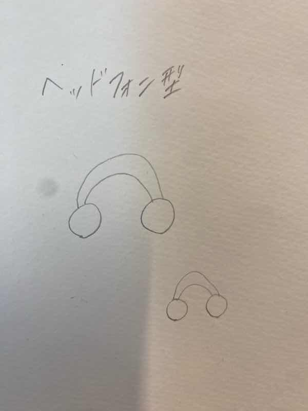
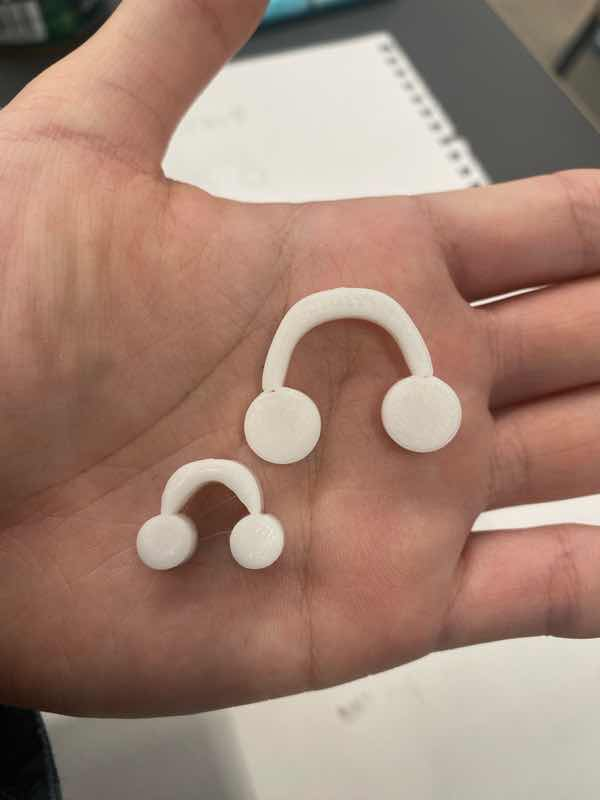
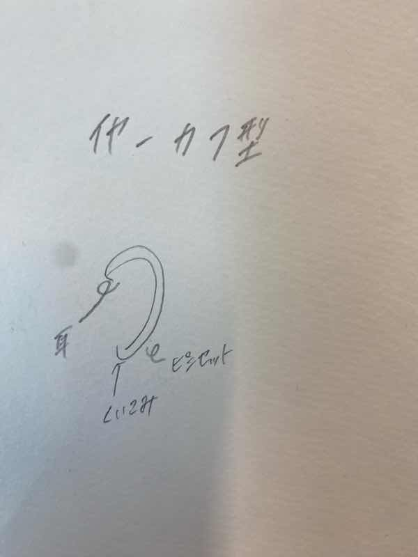
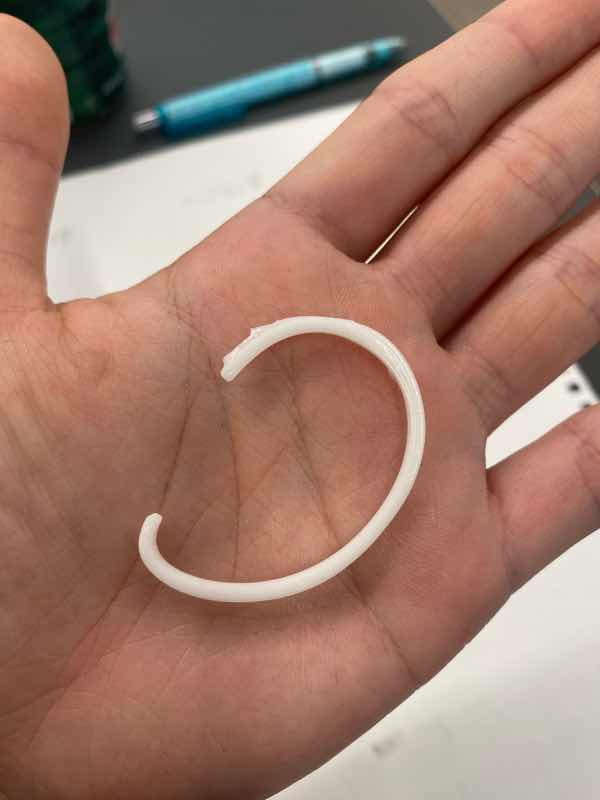

ピンセットからものを考える
ヘッドフォン型ピンセット
スケッチ

実際のもの

設計ファイル
作品の説明
ピンセットの形が、ヘッドフォンのヘッドバンドの部分になるようにした。サイズが小さめなので、カラビナにしたり、個性的なリングとしても利用できる。
この作品を作るまでの経緯・感想
私は音楽が好きで、また今ヘッドフォンが欲しいと思っているので、そこから発展させてピンセットと絡めた作品にした。
だが、もはやピンセット感がなくなってしまったので、厚みを薄くして素材を柔らかくし、
ピンセットから発展した作品であることが分かるものにすればよかったと思う。また、イヤフォンでもできたと思う。
作品を作るにあたって調べたことなど
外部サイト
イヤーカフ型ピンセット
スケッチ

実際のもの

設計ファイル
作品の説明
ピンセットが形を少し変えてイヤーカフになるように、厚みを薄くした。外れないように、耳の内側に食い込むことができる。
この作品を作るまでの経緯・感想
耳の形とピンセットの形がなんとなく似ていたことから作った。装着するときに若干痛いので、なにかしらの工夫ができるとよかった。
作品を作るにあたって調べたことなど
イヤーカフは部分的につけるものが多い。→耳全体を覆うようなものもいいのでは
全体を通しての感想
両方とも身に着けるものになったので、デザインを重視したピンセットにしたりすれば作品の幅が広がると思った。
ただ私は絵を描いたり、新しいものを創造することが苦手なので、既存のものから発展させて考える方が自分には合っていたと思う。